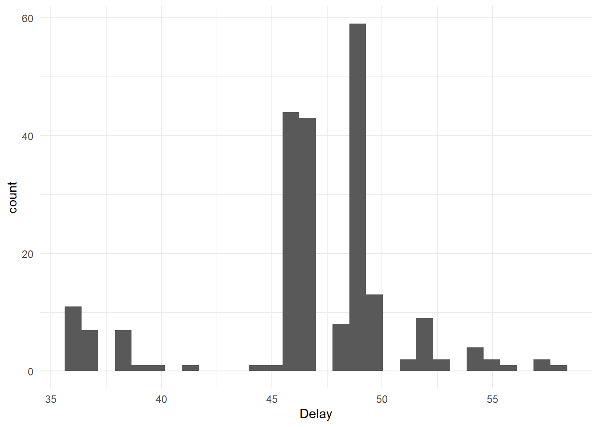
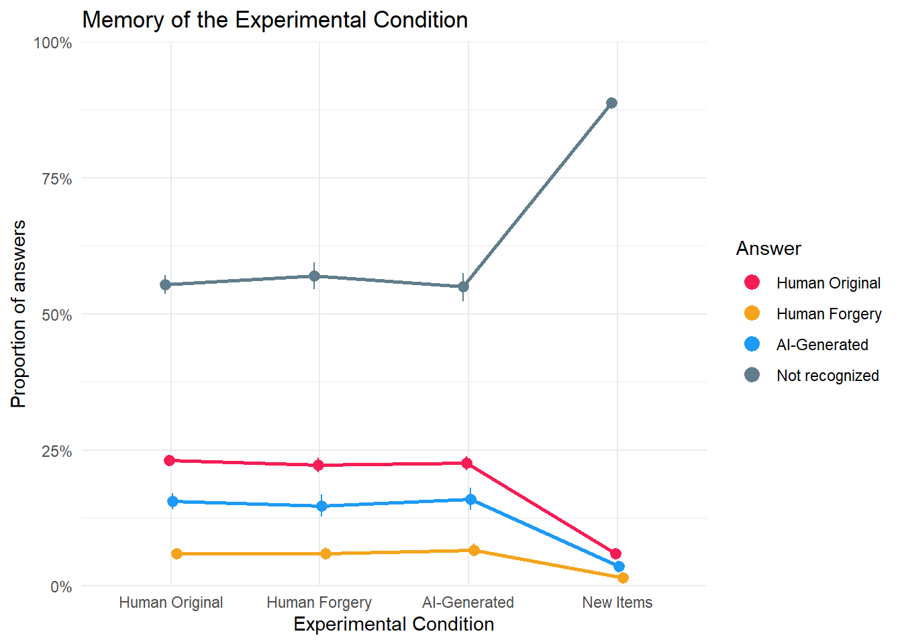
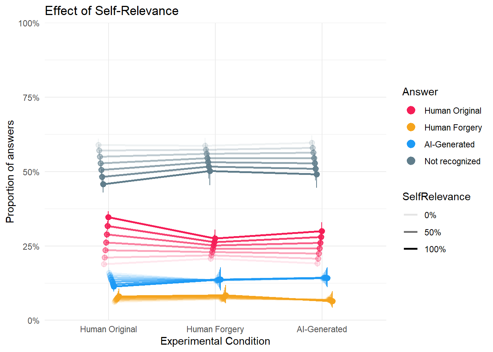
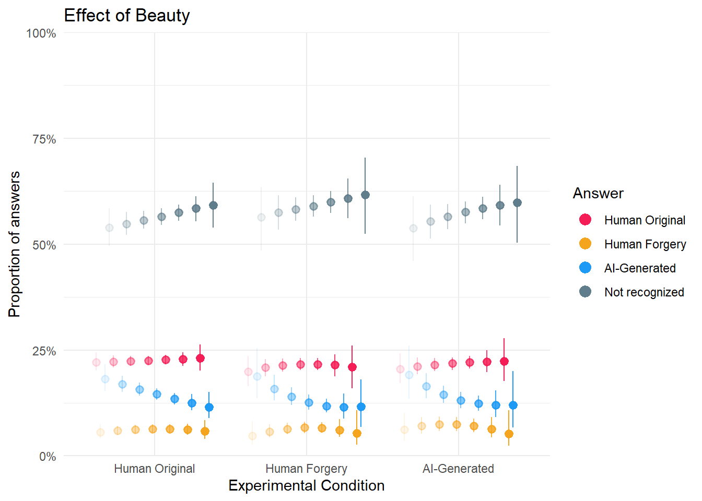
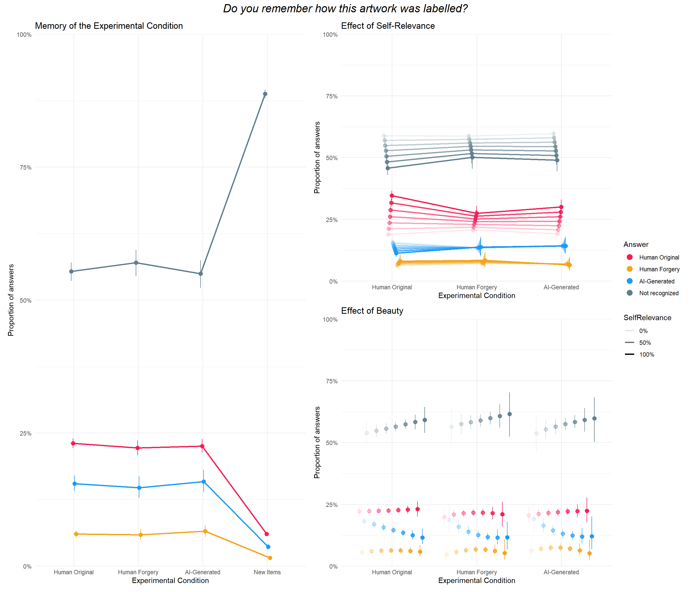
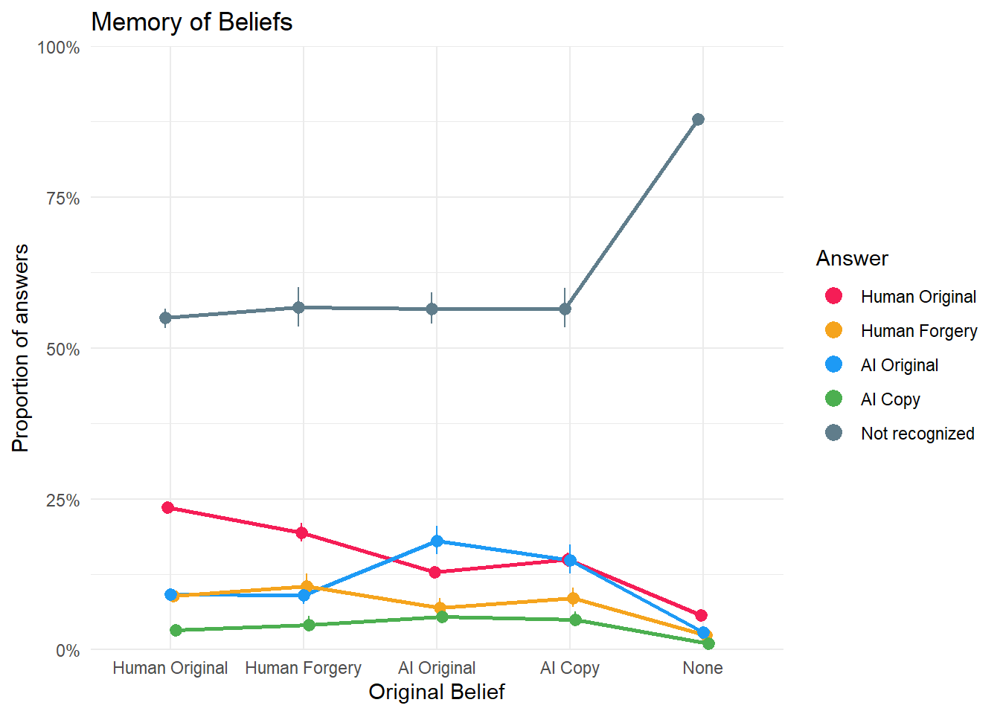
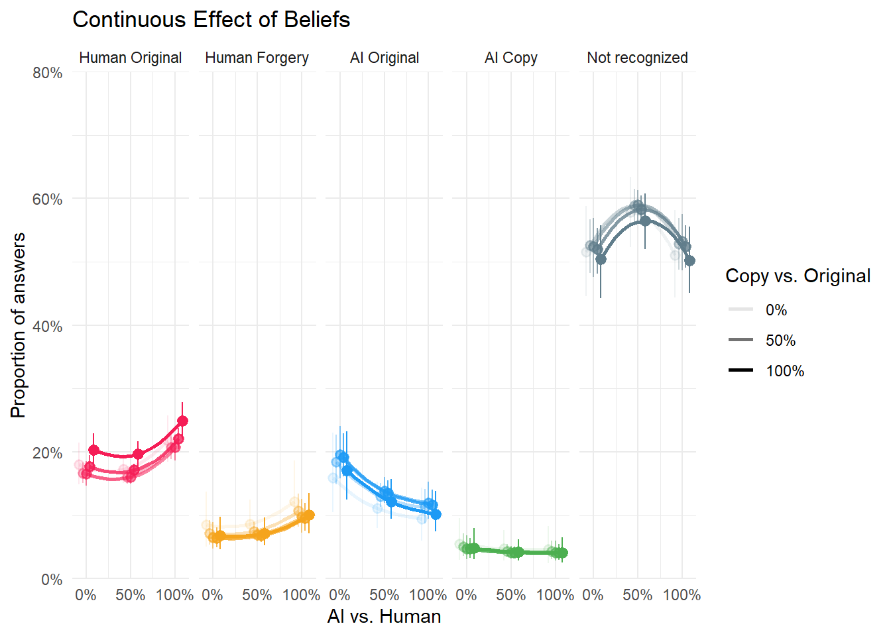
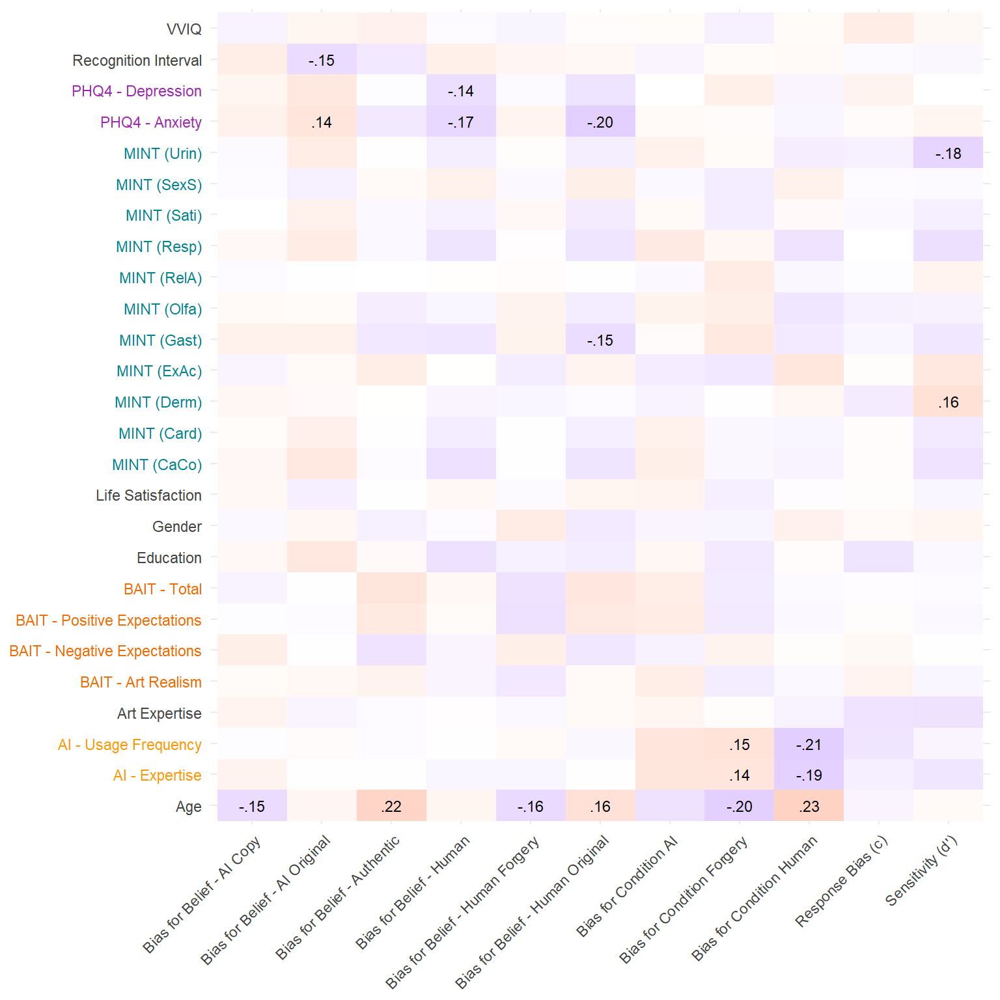

library(tidyverse)
library(easystats)
library(patchwork)
library(ggside)
library(ggdist)
library(brms)
df <- read.csv("../data/data_memory_task.csv") |>
mutate(Condition = fct_relevel(Condition, "Human Original", "Human Forgery", "AI-Generated", "New Items"),
AnswerCondition = fct_relevel(AnswerCondition, "Human Original", "Human Forgery", "AI-Generated", "Not recognized"),
AnswerBelief = fct_relevel(AnswerBelief, "Human Original", "Human Forgery", "AI Original", "AI Copy", "Not recognized"),
Belief = fct_relevel(Belief, "Human Original", "Human Forgery", "AI Original", "AI Copy", "None"))
dfsub <- read.csv("../data/data_participants.csv") |>
filter(Participant %in% df$Participant)
cols <- c(
# Condition
"Human Original" = "#F51D56",
"Human Forgery" = "#F5A41D",
"AI-Generated" = "#1D9AF5",
"AI Original" = "#1D9AF5",
"AI Copy" = "#4CAF50",
"Not recognized" = "#607D8B",
# Style
"Abstract and Avant-garde" = "#E41A1C",
"Classical" = "#377EB8",
"Impressionist and Expressionist" = "#4DAF4A",
"Romantic and Realism" = "#FF7F00"
)FictionArt - Data Cleaning
Data Preparation
Delay
Code
dfsub |>
ggplot(aes(x=Delay)) +
geom_histogram(bins=30) +
theme_minimal()
The mean and median days between the two experiments were 46.95 and 47.00, respectively.
Memory of Condition
Main
Code
m_cond1 <- brm(AnswerCondition ~ Condition + (1|Participant) + (1|Item),
data = df,
family = categorical(link = "logit"),
algorithm = "meanfield",
iter = 8000,
backend = "cmdstanr")------------------------------------------------------------
EXPERIMENTAL ALGORITHM:
This procedure has not been thoroughly tested and may be unstable
or buggy. The interface is subject to change.
------------------------------------------------------------
Gradient evaluation took 0.061406 seconds
1000 transitions using 10 leapfrog steps per transition would take 614.06 seconds.
Adjust your expectations accordingly!
Begin eta adaptation.
Iteration: 1 / 250 [ 0%] (Adaptation)
Iteration: 50 / 250 [ 20%] (Adaptation)
Iteration: 100 / 250 [ 40%] (Adaptation)
Iteration: 150 / 250 [ 60%] (Adaptation)
Iteration: 200 / 250 [ 80%] (Adaptation)
Success! Found best value [eta = 1] earlier than expected.
Begin stochastic gradient ascent.
iter ELBO delta_ELBO_mean delta_ELBO_med notes
100 -15455.677 1.000 1.000
200 -14802.122 0.522 1.000
300 -14672.904 0.351 0.044
400 -14650.076 0.264 0.044
500 -14647.462 0.211 0.009 MEDIAN ELBO CONVERGED
Drawing a sample of size 1000 from the approximate posterior...
COMPLETED.
Finished in 23.8 seconds.Code
# Modify the order of dodging based on the groups for visualization
make_group <- function(resp, covariate = NULL) {
group <- case_when(
resp == "Not recognized" ~ 0,
resp == "Human Original" ~ 1,
resp == "AI-Generated" ~ 2,
resp == "AI Original" ~ 2,
resp == "Human Forgery" ~ 3,
resp == "AI Copy" ~ 4,
.default = NA)
if(!is.null(covariate)) {
covariate <- insight::format_value(normalize(covariate), style_positive="plus")
group <- paste0(group, covariate)
}
group
}
dat_cond1 <- estimate_means(m_cond1, by=c("Condition")) |>
mutate(group = make_group(Response))
p_cond1 <- dat_cond1 |>
ggplot(aes(x=Condition, y = Median, color = Response)) +
geom_line(aes(group=group), position = position_dodge(width=0.1), linewidth = 1,
show.legend = FALSE) +
geom_pointrange(aes(group=group, ymin = CI_low, ymax = CI_high), position = position_dodge(width=0.1),
key_glyph = "point") +
scale_y_continuous(label = scales::percent, limits = c(0,1), expand = c(0, 0)) +
scale_color_manual(values = cols) +
guides(color = guide_legend(override.aes = list(size = 3))) +
labs(y="Proportion of answers", color = "Answer", x = "Experimental Condition",
title = "Memory of the Experimental Condition") +
theme_minimal()
p_cond1
Code
make_contrasts <- function(c, answer=NULL, condition=NULL) {
# We can detect via the space because answer comes first
c$Response1 <- case_when(
str_detect(c$Level1, "Human Original ") ~ "Human Original",
str_detect(c$Level1, "Human Forgery ") ~ "Human Forgery",
str_detect(c$Level1, "AI-Generated ") ~ "AI-Generated",
str_detect(c$Level1, "Not recognized ") ~ "Not recognized",
str_detect(c$Level1, "AI Copy ") ~ "AI Copy",
str_detect(c$Level1, "AI Original ") ~ "AI Original",
.default = NA
)
c$Response2 <- case_when(
str_detect(c$Level2, "Human Original ") ~ "Human Original",
str_detect(c$Level2, "Human Forgery ") ~ "Human Forgery",
str_detect(c$Level2, "AI-Generated ") ~ "AI-Generated",
str_detect(c$Level2, "Not recognized ") ~ "Not recognized",
str_detect(c$Level2, "AI Copy ") ~ "AI Copy",
str_detect(c$Level2, "AI Original ") ~ "AI Original",
.default = NA
)
c$Level1 <- str_remove(c$Level1, "Human Original |Human Forgery |AI-Generated |Not recognized |AI Original |AI Copy ")
c$Level2 <- str_remove(c$Level2, "Human Original |Human Forgery |AI-Generated |Not recognized |AI Original |AI Copy ")
if(!is.null(answer)) {
c <- filter(c, str_detect(Response1, answer) & str_detect(Response2, answer))
}
if(!is.null(condition)) {
c <- filter(c, str_detect(Level1, condition) & str_detect(Level2, condition))
}
# Remove duplicated cols
if(length(unique(c$Response1)) == 1 & all(c$Response1 == c$Response2)) {
c <- cbind(data.frame("Category" = c$Response1[1]), c)
c$Response1 <- NULL
c$Response2 <- NULL
}
if(length(unique(c$Level1)) == 1 & all(c$Level1 == c$Level2)) {
c <- cbind(data.frame("Category" = c$Level1[1]), c)
c$Level1 <- NULL
c$Level2 <- NULL
}
c <- arrange(c, desc(abs(Median)))
t <- format_table(c, zap_small = TRUE)
t$effectsize <- as.numeric(c$Median)
t$sig <- as.numeric(c$pd)
gt::gt(t) |>
gt::data_color(columns = "effectsize", target_columns = "Median", method = "numeric",
palette = c("red", "red", "white", "green", "green"), domain = c(-0.7, 0.7)) |>
gt::data_color(columns = "sig", target_columns = "pd", fn = \(x) {
ifelse(x > 0.99, "#FFC107", ifelse(x > 0.97, "#FFEB3B", ifelse(x > 0.95, "#FFF59D", "white")))
}) |>
gt::cols_hide(c("effectsize", "sig")) |>
gt::tab_header(title = "Marginal Contrasts")
}
c <- estimate_contrasts(m_cond1, contrast = c("Condition"), test = "pd")
make_contrasts(c, answer="Not recognized") | Marginal Contrasts | |||||
| Category | Level1 | Level2 | Median | CI | pd |
|---|---|---|---|---|---|
| Not recognized | New Items | AI-Generated | 0.34 | [ 0.31, 0.36] | 100% |
| Not recognized | New Items | Human Original | 0.33 | [ 0.32, 0.35] | 100% |
| Not recognized | New Items | Human Forgery | 0.32 | [ 0.29, 0.34] | 100% |
| Not recognized | AI-Generated | Human Forgery | -0.02 | [-0.05, 0.01] | 90.50% |
| Not recognized | Human Forgery | Human Original | 0.02 | [-0.01, 0.04] | 92.20% |
| Not recognized | AI-Generated | Human Original | 0.00 | [-0.03, 0.02] | 65.20% |
Code
make_contrasts(c, condition="Human Original")| Marginal Contrasts | |||||
| Category | Median | CI | pd | Response1 | Response2 |
|---|---|---|---|---|---|
| Human Original | 0.49 | [ 0.47, 0.51] | 100% | Not recognized | Human Forgery |
| Human Original | 0.40 | [ 0.37, 0.43] | 100% | Not recognized | AI-Generated |
| Human Original | 0.32 | [ 0.30, 0.35] | 100% | Not recognized | Human Original |
| Human Original | -0.17 | [-0.18, -0.16] | 100% | Human Forgery | Human Original |
| Human Original | 0.10 | [ 0.08, 0.11] | 100% | AI-Generated | Human Forgery |
| Human Original | -0.08 | [-0.09, -0.06] | 100% | AI-Generated | Human Original |
Code
make_contrasts(c, condition="New Items")Warning: Some values were outside the color scale and will be treated as NA| Marginal Contrasts | |||||
| Category | Median | CI | pd | Response1 | Response2 |
|---|---|---|---|---|---|
| New Items | 0.87 | [ 0.86, 0.88] | 100% | Not recognized | Human Forgery |
| New Items | 0.85 | [ 0.84, 0.86] | 100% | Not recognized | AI-Generated |
| New Items | 0.83 | [ 0.82, 0.84] | 100% | Not recognized | Human Original |
| New Items | -0.04 | [-0.05, -0.04] | 100% | Human Forgery | Human Original |
| New Items | -0.02 | [-0.03, -0.02] | 100% | AI-Generated | Human Original |
| New Items | 0.02 | [ 0.02, 0.03] | 100% | AI-Generated | Human Forgery |
Self-Relevance
Code
m_cond2a <- brm(AnswerCondition ~ Condition * SelfRelevance + (1|Participant),
data = df,
family = categorical(link = "logit"),
algorithm = "meanfield",
iter = 8000,
backend = "cmdstanr")Warning: Rows containing NAs were excluded from the model.------------------------------------------------------------
EXPERIMENTAL ALGORITHM:
This procedure has not been thoroughly tested and may be unstable
or buggy. The interface is subject to change.
------------------------------------------------------------
Gradient evaluation took 0.010415 seconds
1000 transitions using 10 leapfrog steps per transition would take 104.15 seconds.
Adjust your expectations accordingly!
Begin eta adaptation.
Iteration: 1 / 250 [ 0%] (Adaptation)
Iteration: 50 / 250 [ 20%] (Adaptation)
Iteration: 100 / 250 [ 40%] (Adaptation)
Iteration: 150 / 250 [ 60%] (Adaptation)
Iteration: 200 / 250 [ 80%] (Adaptation)
Success! Found best value [eta = 1] earlier than expected.
Begin stochastic gradient ascent.
iter ELBO delta_ELBO_mean delta_ELBO_med notes
100 -10981.965 1.000 1.000
200 -10899.023 0.504 1.000
300 -10886.602 0.336 0.008 MEDIAN ELBO CONVERGED
Drawing a sample of size 1000 from the approximate posterior...
COMPLETED.
Finished in 11.1 seconds.Code
dat_cond2a <- estimate_means(m_cond2a, by=c("Condition", "SelfRelevance"), length = 7) |>
mutate(group = make_group(Response, SelfRelevance),
SelfRelevance = fct_reorder(format_percent(SelfRelevance, digits = 0), SelfRelevance))
p_cond2a <- dat_cond2a |>
ggplot(aes(x=Condition, y = Median, color = Response)) +
geom_line(aes(group=group, alpha=SelfRelevance), position = position_dodge(width=0.2), linewidth = 1,
show.legend = c(color = FALSE)) +
geom_pointrange(aes(group=group, ymin = CI_low, ymax = CI_high, alpha=SelfRelevance), position = position_dodge(width=0.2),
show.legend = c(alpha = FALSE), key_glyph = "point") +
scale_y_continuous(label = scales::percent, limits = c(0,1), expand = c(0, 0)) +
scale_color_manual(values = cols) +
scale_alpha_discrete(breaks = c("0%", "50%", "100%")) +
guides(color = guide_legend(override.aes = list(size = 3))) +
labs(y="Proportion of answers", color = "Answer", x = "Experimental Condition",
title = "Effect of Self-Relevance") +
theme_minimal()Warning: Using alpha for a discrete variable is not advised.Code
p_cond2a
Code
c <- estimate_contrasts(m_cond2a, contrast = c("Condition", "SelfRelevance"), test = "pd")
# Specific contrast
c[c$Parameter == "Human Original Human Original 1.000 - Human Original Human Original 0.000",]Marginal Contrasts Analysis
Parameter
-------------------------------------------------------------------------
Human Original Human Original 1.000 - Human Original Human Original 0.000
Median | 95% CI | pd
----------------------------
0.16 | [0.14, 0.18] | 100%
Variable predicted: AnswerCondition
Predictors contrasted: Condition, SelfRelevance
Predictors averaged: Participant
Contrasts are on the response-scale.Beauty
Code
m_cond2b <- brm(AnswerCondition ~ Condition * poly(Beauty, 2) + (1|Participant),
data = filter(df, !is.na(Beauty)),
family = categorical(link = "logit"),
algorithm = "meanfield",
iter = 8000,
backend = "cmdstanr")------------------------------------------------------------
EXPERIMENTAL ALGORITHM:
This procedure has not been thoroughly tested and may be unstable
or buggy. The interface is subject to change.
------------------------------------------------------------
Gradient evaluation took 0.009251 seconds
1000 transitions using 10 leapfrog steps per transition would take 92.51 seconds.
Adjust your expectations accordingly!
Begin eta adaptation.
Iteration: 1 / 250 [ 0%] (Adaptation)
Iteration: 50 / 250 [ 20%] (Adaptation)
Iteration: 100 / 250 [ 40%] (Adaptation)
Iteration: 150 / 250 [ 60%] (Adaptation)
Iteration: 200 / 250 [ 80%] (Adaptation)
Success! Found best value [eta = 1] earlier than expected.
Begin stochastic gradient ascent.
iter ELBO delta_ELBO_mean delta_ELBO_med notes
100 -11736.702 1.000 1.000
200 -11000.482 0.533 1.000
300 -10967.195 0.357 0.067
400 -10860.314 0.270 0.067
500 -10843.136 0.216 0.010 MEDIAN ELBO CONVERGED
Drawing a sample of size 1000 from the approximate posterior...
COMPLETED.
Finished in 13.3 seconds.Code
dat_cond2b <- estimate_means(m_cond2b, by=c("Condition", "Beauty"), length = 7) |>
mutate(group = make_group(Response, Beauty),
Beauty = fct_reorder(format_percent(Beauty, digits = 0), Beauty))
p_cond2b <- dat_cond2b |>
ggplot(aes(x=Condition, y = Median, color = Response)) +
# geom_line(aes(group=group, alpha=Beauty), position = position_dodge(width=0.8), linewidth = 1) +
geom_pointrange(aes(ymin = CI_low, ymax = CI_high, alpha=Beauty), position = position_dodge(width=0.8),
show.legend = c(alpha = FALSE), key_glyph = "point") +
scale_y_continuous(label = scales::percent, limits = c(0,1), expand = c(0, 0)) +
scale_color_manual(values = cols) +
scale_alpha_discrete(breaks = c("0%", "50%", "100%")) +
guides(alpha = "none", color = guide_legend(override.aes = list(size = 3))) +
labs(y="Proportion of answers", color = "Answer", x = "Experimental Condition",
title = "Effect of Beauty") +
theme_minimal() Warning: Using alpha for a discrete variable is not advised.Code
p_cond2b
Code
((p_cond1 + theme(legend.position = "none")) | (p_cond2a / p_cond2b) +
plot_layout(guides = "collect")) +
plot_annotation(title = "Do you remember how this artwork was labelled?", theme = theme(plot.title = element_text(hjust = 0.5, face="italic", size=rel(1.5))))
Memory of Beliefs
Main
Code
m_belief1a <- brm(AnswerBelief ~ Belief + (1|Participant),
data = df,
family = categorical(link = "logit"),
algorithm = "meanfield",
iter = 8000,
backend = "cmdstanr")------------------------------------------------------------
EXPERIMENTAL ALGORITHM:
This procedure has not been thoroughly tested and may be unstable
or buggy. The interface is subject to change.
------------------------------------------------------------
Gradient evaluation took 0.020273 seconds
1000 transitions using 10 leapfrog steps per transition would take 202.73 seconds.
Adjust your expectations accordingly!
Begin eta adaptation.
Iteration: 1 / 250 [ 0%] (Adaptation)
Iteration: 50 / 250 [ 20%] (Adaptation)
Iteration: 100 / 250 [ 40%] (Adaptation)
Iteration: 150 / 250 [ 60%] (Adaptation)
Iteration: 200 / 250 [ 80%] (Adaptation)
Success! Found best value [eta = 1] earlier than expected.
Begin stochastic gradient ascent.
iter ELBO delta_ELBO_mean delta_ELBO_med notes
100 -16788.145 1.000 1.000
200 -16645.913 0.504 1.000
300 -16645.766 0.336 0.009 MEDIAN ELBO CONVERGED
Drawing a sample of size 1000 from the approximate posterior...
COMPLETED.
Finished in 19.0 seconds.Code
dat_belief1a <- estimate_means(m_belief1a, by=c("Belief")) |>
mutate(group = make_group(Response))
p_belief1a <- dat_belief1a |>
ggplot(aes(x=Belief, y = Median, color = Response)) +
geom_line(aes(group=group), position = position_dodge(width=0.1), linewidth = 1,
show.legend = FALSE) +
geom_pointrange(aes(group=group, ymin = CI_low, ymax = CI_high), position = position_dodge(width=0.1),
key_glyph = "point") +
scale_y_continuous(label = scales::percent, limits = c(0,1), expand = c(0, 0)) +
scale_color_manual(values = cols) +
guides(color = guide_legend(override.aes = list(size = 3))) +
labs(y="Proportion of answers", color = "Answer", x = "Original Belief",
title = "Memory of Beliefs") +
theme_minimal()
p_belief1a
Code
c <- estimate_contrasts(m_belief1a, contrast = c("Belief"), test = "pd")
make_contrasts(c, answer="Not recognized") | Marginal Contrasts | |||||
| Category | Level1 | Level2 | Median | CI | pd |
|---|---|---|---|---|---|
| Not recognized | None | Human Original | 0.33 | [ 0.31, 0.35] | 100% |
| Not recognized | None | AI Original | 0.31 | [ 0.29, 0.34] | 100% |
| Not recognized | None | AI Copy | 0.31 | [ 0.28, 0.35] | 100% |
| Not recognized | None | Human Forgery | 0.31 | [ 0.28, 0.34] | 100% |
| Not recognized | Human Forgery | Human Original | 0.02 | [-0.02, 0.05] | 88.50% |
| Not recognized | AI Copy | Human Original | 0.02 | [-0.02, 0.05] | 82.50% |
| Not recognized | AI Original | Human Original | 0.02 | [-0.01, 0.04] | 91.80% |
| Not recognized | AI Original | Human Forgery | 0.00 | [-0.04, 0.04] | 52.90% |
| Not recognized | AI Copy | Human Forgery | 0.00 | [-0.05, 0.04] | 51.90% |
| Not recognized | AI Copy | AI Original | 0.00 | [-0.04, 0.04] | 51.70% |
Code
make_contrasts(c, condition="Human Original")| Marginal Contrasts | |||||
| Category | Median | CI | pd | Response1 | Response2 |
|---|---|---|---|---|---|
| Human Original | 0.52 | [ 0.50, 0.53] | 100% | Not recognized | AI Copy |
| Human Original | 0.46 | [ 0.44, 0.48] | 100% | Not recognized | Human Forgery |
| Human Original | 0.46 | [ 0.44, 0.48] | 100% | Not recognized | AI Original |
| Human Original | 0.31 | [ 0.29, 0.33] | 100% | Not recognized | Human Original |
| Human Original | -0.20 | [-0.21, -0.19] | 100% | AI Copy | Human Original |
| Human Original | -0.15 | [-0.16, -0.13] | 100% | Human Forgery | Human Original |
| Human Original | -0.14 | [-0.16, -0.13] | 100% | AI Original | Human Original |
| Human Original | -0.06 | [-0.07, -0.05] | 100% | AI Copy | AI Original |
| Human Original | -0.06 | [-0.07, -0.04] | 100% | AI Copy | Human Forgery |
| Human Original | 0.00 | [-0.01, 0.02] | 66.20% | AI Original | Human Forgery |
Continuous
Code
m_belief1b <- brm(AnswerBelief ~ poly(Reality, 2) * poly(Authenticity, 2) + (1|Participant),
data = filter(df, Type == "Old", !is.na(Reality)),
family = categorical(link = "logit"),
algorithm = "meanfield",
iter = 12000,
backend = "cmdstanr")------------------------------------------------------------
EXPERIMENTAL ALGORITHM:
This procedure has not been thoroughly tested and may be unstable
or buggy. The interface is subject to change.
------------------------------------------------------------
Gradient evaluation took 0.009641 seconds
1000 transitions using 10 leapfrog steps per transition would take 96.41 seconds.
Adjust your expectations accordingly!
Begin eta adaptation.
Iteration: 1 / 250 [ 0%] (Adaptation)
Iteration: 50 / 250 [ 20%] (Adaptation)
Iteration: 100 / 250 [ 40%] (Adaptation)
Iteration: 150 / 250 [ 60%] (Adaptation)
Iteration: 200 / 250 [ 80%] (Adaptation)
Success! Found best value [eta = 1] earlier than expected.
Begin stochastic gradient ascent.
iter ELBO delta_ELBO_mean delta_ELBO_med notes
100 -11794.023 1.000 1.000
200 -11704.251 0.504 1.000
300 -11642.760 0.338 0.008 MEDIAN ELBO CONVERGED
Drawing a sample of size 1000 from the approximate posterior...
COMPLETED.
Finished in 13.5 seconds.Code
dat_belief1b <- estimate_means(m_belief1b, by=c("Reality", "Authenticity"), length = c(13, 5)) |>
mutate(
group = make_group(Response, Authenticity),
Authenticity = fct_reorder(format_percent(Authenticity, digits = 0), Authenticity))
p_belief1b <- dat_belief1b |>
ggplot(aes(x=Reality, y = Median, color = Response)) +
geom_line(aes(group=group, alpha=Authenticity), position = position_dodge(width=0.2), linewidth = 1,
key_glyph = "path", show.legend = c(color = FALSE)) +
geom_pointrange(data=filter(dat_belief1b, round(Reality, 6) %in% c(0, 0.5, 1)),
aes(group=group, ymin = CI_low, ymax = CI_high, alpha=Authenticity), position = position_dodge(width=0.2),
key_glyph = "point", show.legend = c(alpha = FALSE)) +
scale_y_continuous(labels = scales::percent, limits = c(0,0.8), expand = c(0, 0)) +
scale_x_continuous(labels = scales::percent, breaks = c(0, 0.5, 1)) +
scale_color_manual(values = cols) +
scale_alpha_discrete(breaks = c("0%", "50%", "100%")) +
guides(color = "none") +
labs(y="Proportion of answers", color = "Answer", x = "AI vs. Human", alpha = "Copy vs. Original",
title = "Continuous Effect of Beliefs") +
theme_minimal() +
facet_grid(~Response)Warning: Using alpha for a discrete variable is not advised.Code
p_belief1bWarning: `position_dodge()` requires non-overlapping x intervals.Warning: `position_dodge()` requires non-overlapping x intervals.
`position_dodge()` requires non-overlapping x intervals.
`position_dodge()` requires non-overlapping x intervals.
`position_dodge()` requires non-overlapping x intervals.
Code
p_belief1a / p_belief1b +
plot_layout(guides = "collect") +
plot_annotation(title = "Do you remember your own judgments?",
theme = theme(plot.title = element_text(hjust = 0.5, face="italic", size=rel(1.5))))Warning: `position_dodge()` requires non-overlapping x intervals.
`position_dodge()` requires non-overlapping x intervals.
`position_dodge()` requires non-overlapping x intervals.
`position_dodge()` requires non-overlapping x intervals.
`position_dodge()` requires non-overlapping x intervals.
Participant-level
In this recognition task, in which people were presented old and new items, and had to 1) answer if they recognize it or not, and if so then remember the condition it was presented in as well as the memory of their own belief that they had about the item.
Compute Indidces
- dprime: Sensitivity index quantifying how well a participant discriminates old from new items. Higher values indicate better recognition accuracy; 0 reflects chance-level discrimination.
- c : Parametric response bias criterion. Negative values indicate a liberal bias (more “old” responses), positive values a conservative bias (more “new” responses), and 0 indicates no bias.
- BiasCondition_Human: Among all recognised items, the proportion labelled Human Original. Higher values indicate a stronger tendency to classify recognised items as human, regardless of their original condition assignment.
- BiasCondition_Forgery: Among all recognised items, the proportion labelled Human Forgery. This reflects a bias towards attributing recognised items to manipulated human sources, regardless of their original condition assignment.
- BiasCondition_AI: Among all recognised items, the proportion labelled AI-Generated. Higher values indicate a stronger general tendency to attribute recognised items to AI, regardless of their original condition assignment.
- BiasBelief_HumanOriginal: Proportion of recognised items for which participants remember having believed they were Human Original.
- BiasBelief_HumanForgery: Proportion remembered as Human Forgery, indicating recalled suspicion of human tampering.
- BiasBelief_AIOriginal: Proportion remembered as AI Original, indicating remembered beliefs that items were originally produced by AI.
- BiasBelief_AICopy: Proportion remembered as AI Copy, reflecting recalled beliefs that items were AI-generated and derivative.
- BiasBelief_Human: Combined proportion of Human Original + Human Forgery. Represents the tendency to remember having believed items were human rather than AI.
- BiasBelief_Authentic: Combined proportion of Human Original + AI Original. Captures the tendency to recall having believed items were “authentic” originals rather than copies or forgeries.
Code
# log-linear corrected rates to avoid 0/1 extremes
ll_rate <- function(count, total) {
(count + 0.5) / (total + 1)
}
# parametric SDT: d' and c
sdt_metrics <- function(hit_rate, fa_rate) {
# qnorm works with rates strictly in (0,1)
z_hit <- qnorm(hit_rate)
z_fa <- qnorm(fa_rate)
dprime <- z_hit - z_fa
criterion_c <- -0.5 * (z_hit + z_fa)
tibble(dprime = dprime, c = criterion_c)
}
dffeatures <- df |>
summarise(
n_old = sum(Type == "Old", na.rm = TRUE),
n_new = sum(Type == "New", na.rm = TRUE),
hits = sum(Recognition == "Yes" & Type == "Old", na.rm = TRUE),
misses = sum(Recognition == "No" & Type == "Old", na.rm = TRUE),
fa = sum(Recognition == "Yes" & Type == "New", na.rm = TRUE),
cr = sum(Recognition == "No" & Type == "New", na.rm = TRUE),
.by = "Participant"
) |>
mutate(
p_hit = ll_rate(hits, n_old),
p_fa = ll_rate(fa, n_new)
) |>
mutate(
map2_dfr(p_hit, p_fa, sdt_metrics)
) |>
select(Participant, dprime, c)
# Condition memory bias
dffeatures <- df |>
summarise(n = n(), .by = c("Participant", "AnswerCondition")) |>
complete(Participant, AnswerCondition, fill = list(n = 0)) |>
filter(AnswerCondition != "Not recognized") |>
mutate(Total = sum(n), .by = "Participant") |>
mutate(p = n / Total) |>
select(-n, -Total) |>
mutate(AnswerCondition = str_replace(AnswerCondition, "AI-Generated", "BiasCondition_AI"),
AnswerCondition = str_replace(AnswerCondition, "Human Original", "BiasCondition_Human"),
AnswerCondition = str_replace(AnswerCondition, "Human Forgery", "BiasCondition_Forgery")) |>
pivot_wider(names_from = AnswerCondition, values_from = p) |>
full_join(dffeatures, by = "Participant")
# Belief memory bias
dffeatures <- df |>
summarise(n = n(), .by = c("Participant", "AnswerBelief")) |>
complete(Participant, AnswerBelief, fill = list(n = 0)) |>
filter(AnswerBelief != "Not recognized") |>
mutate(Total = sum(n), .by = "Participant") |>
mutate(p = n / Total) |>
select(-n, -Total) |>
mutate(AnswerBelief = str_replace(AnswerBelief, "AI Original", "BiasBelief_AIOriginal"),
AnswerBelief = str_replace(AnswerBelief, "AI Copy", "BiasBelief_AICopy"),
AnswerBelief = str_replace(AnswerBelief, "Human Original", "BiasBelief_HumanOriginal"),
AnswerBelief = str_replace(AnswerBelief, "Human Forgery", "BiasBelief_HumanForgery")) |>
pivot_wider(names_from = AnswerBelief, values_from = p) |>
mutate(BiasBelief_Human = BiasBelief_HumanOriginal + BiasBelief_HumanForgery,
BiasBelief_Authentic = BiasBelief_HumanOriginal + BiasBelief_AIOriginal) |>
full_join(dffeatures, by = "Participant")Correlation
Code
df2 <- dfsub |>
select(Participant, Gender, Age, Education, Delay, Art_Expertise,
BAIT_AI_Use, BAIT_AI_Knowledge, BAIT_Negative, BAIT_Positive, BAIT_ArtRealistic, BAIT_Total,
VVIQ_Total, LifeSatisfaction, PHQ4_Anxiety, PHQ4_Depression, starts_with("MINT_"), -MINT_AttentionCheck) |>
mutate(Gender = case_when(
Gender == "Male" ~ 0,
Gender == "Female" ~ 1,
.default = NA
),
BAIT_AI_Use = case_when(
BAIT_AI_Use == "Never" ~ 0,
BAIT_AI_Use == "A few times per month" ~ 1,
BAIT_AI_Use == "A few times per week" ~ 2,
BAIT_AI_Use == "Once a day" ~ 3,
BAIT_AI_Use == "A few times per day" ~ 4,
.default = NA
),
Education = case_when(
Education == "High school" ~ 0,
Education == "Bachelor" ~ 1,
Education == "Master" ~ 2,
Education == "Doctorate" ~ 3,
.default = NA
))
cleanlabels <- function(params) {
params <- as.character(params)
params[str_detect(params, "MINT_")] <- paste0(params[str_detect(params, "MINT_")], ")")
params <- str_replace_all(params, "MINT_", "MINT (")
params <- str_replace_all(params, "VVIQ_Total", "VVIQ")
params <- str_replace_all(params, "PHQ4_", "PHQ4 - ")
params <- str_replace_all(params, "LifeSatisfaction", "Life Satisfaction")
params <- str_replace_all(params, "Delay", "Recognition Interval")
params <- str_replace_all(params, "Art_Expertise", "Art Expertise")
params <- str_replace_all(params, "BAIT_AI_Use", "AI - Usage Frequency")
params <- str_replace_all(params, "BAIT_AI_Knowledge", "AI - Expertise")
params <- str_replace_all(params, "BAIT_Negative", "BAIT - Negative Expectations")
params <- str_replace_all(params, "BAIT_Positive", "BAIT - Positive Expectations")
params <- str_replace_all(params, "BAIT_ArtRealistic", "BAIT - Art Realism")
params <- str_replace_all(params, "BAIT_Total", "BAIT - Total")
params <- str_replace_all(params, "BiasCondition_", "Bias for Condition ")
params <- str_replace_all(params, "BiasBelief_HumanOriginal", "Bias for Belief - Human Original")
params <- str_replace_all(params, "BiasBelief_HumanForgery", "Bias for Belief - Human Forgery")
params <- str_replace_all(params, "BiasBelief_AIOriginal", "Bias for Belief - AI Original")
params <- str_replace_all(params, "BiasBelief_AICopy", "Bias for Belief - AI Copy")
params <- str_replace_all(params, "BiasBelief_Human", "Bias for Belief - Human")
params <- str_replace_all(params, "BiasBelief_Authentic", "Bias for Belief - Authentic")
params <- str_replace_all(params, "dprime", "Sensitivity (d')")
params[params == "c"] <- "Response Bias (c)"
factor(params, levels = sort(as.character(unique(params))))
}
r <- dffeatures |>
correlation::correlation(df2, p_adjust="none") |>
correlation::cor_sort() |>
mutate(label = ifelse(p < .05, paste0(insight::format_value(r, lead_zero = FALSE, zap_small = TRUE)), ""),
Parameter1 = cleanlabels(Parameter1),
Parameter2 = cleanlabels(Parameter2))
r[as.character(r$Parameter1) == as.character(r$Parameter2), "label"] <- ""
xnames <- levels(r$Parameter1)
ynames <- levels(r$Parameter2)
xcol <- case_when(
str_detect(xnames, "MINT") ~ "#00838F",
str_detect(xnames, "BAIT") ~ "#EF6C00",
str_detect(xnames, "AI -") ~ "#FF9800",
str_detect(xnames, "PHQ4") ~ "#9C27B0",
str_detect(xnames, "BPQ") ~ "#795548",
.default = "#424242"
)
ycol <- case_when(
str_detect(ynames, "MINT") ~ "#00838F",
str_detect(ynames, "BAIT") ~ "#EF6C00",
str_detect(ynames, "AI -") ~ "#FF9800",
str_detect(ynames, "PHQ4") ~ "#9C27B0",
str_detect(ynames, "BPQ") ~ "#795548",
.default = "#424242"
)
xbold <- case_when(
xnames %in% c("Awareness", "MINT - Awareness") ~ "bold",
str_detect(xnames, "Visceroception") ~ "bold",
str_detect(xnames, "Deficit") ~ "bold",
.default = "plain"
)
ybold <- case_when(
ynames %in% c("Awareness", "MINT - Awareness") ~ "bold",
str_detect(ynames, "Visceroception") ~ "bold",
str_detect(ynames, "Deficit") ~ "bold",
.default = "plain"
)
r |>
ggplot(aes(x=Parameter1, y=Parameter2, fill=r)) +
geom_tile() +
geom_text(aes(label=label), size=3) +
scale_fill_gradient2(low="blue", high="red", mid="white", midpoint=0, limits = c(-1, 1)) +
theme_minimal() +
theme(axis.text.x = element_text(angle = 45, hjust=1, color = xcol, face = xbold),
axis.text.y = element_text(color = ycol, face = ybold),
legend.position = "none",
axis.title = element_blank())Warning: Vectorized input to `element_text()` is not officially supported.
ℹ Results may be unexpected or may change in future versions of ggplot2.
Vectorized input to `element_text()` is not officially supported.
ℹ Results may be unexpected or may change in future versions of ggplot2.